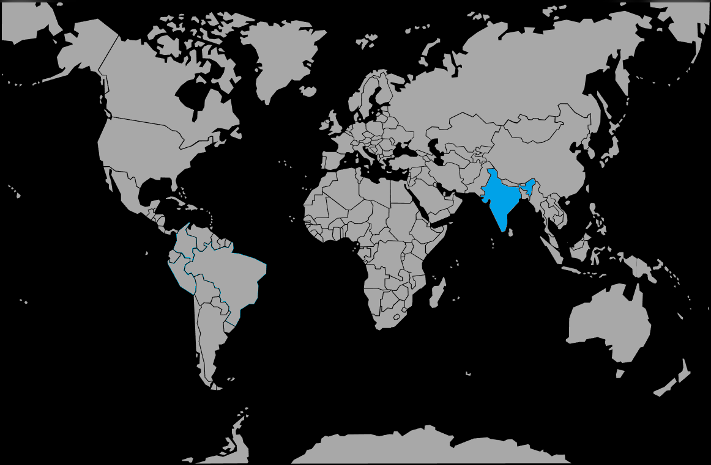

Systématique
- Ordre : Anabantiformes
- Famille : Osphronemidae
- Genre : Pseudosphromenus
- Espèce : Pseudosphromenus dayi
Pseudosphromenus dayi, aussi appelé macropode de Day ou paradis à queue pointue brun, est un petit gourami labyrinthidé paisible originaire du sud de l’Inde.
Le mâle atteint environ 6,5–7,5 cm (filaments caudaux compris), la femelle 5–6 cm, avec un corps brun à olive et des nageoires présentant des reflets rouges ou orangés, surtout en période de reproduction.
C’est une espèce plutôt calme, à maintenir avec des poissons peu remuants ; elle occupe la zone médiane et supérieure et apprécie les bacs densément plantés avec de nombreuses cachettes.
Un couple ou un harem (un mâle pour plusieurs femelles) dans un volume modeste permet d’observer un comportement territorial modéré, sans agressivité excessive si le décor offre des refuges visuels.
Mode : constructeur de nid de bulles, souvent dans une cavité, sous une feuille, une racine ou un élément de décor ; le nid est généralement petit et discret.
Le mâle enlace la femelle lors de la ponte, récupère les œufs et les place dans le nid ; après le frai, la femelle est en général chassée et le mâle garde seul les œufs (éclosion en 24–48 h, nage libre en 2–3 jours).
Dimorphisme sexuel : mâle plus grand, plus coloré, avec nageoires dorsale, anale et caudale plus allongées ; femelle plus petite, au ventre plus rond lorsqu’elle est gravide.
Espérance de vie : environ 3 à 5 ans en aquarium, avec une eau stable et une alimentation de qualité.
Pseudosphromenus dayi fréquente des eaux calmes ou stagnantes : rizières, marais, mares, fossés, zones de plaines inondables et bordures de rivières lentes, généralement peu profondes et très végétalisées.
Répartition
Origine naturelle :
- Côtes et plaines du sud‑ouest de l’Inde, notamment en Kerala, dans les bassins de plusieurs petites rivières côtières.
- Présent dans des fossés, marécages, rizières, étangs envahis de végétation et marges de rivières lentes.
Ces milieux sont chauds, peu profonds, riches en végétation submergée et flottante, souvent soumis à de fortes variations saisonnières de niveau d’eau.
Paramètres de maintenance
Température : 24 à 28 °C (tolérance plus large environ 20–28 °C).
pH : 6,0 à 7,5, eau légèrement acide à neutre, supportant un peu plus alcalin.
GH : 4 à 15 °dGH, eau douce à moyennement dure.
Courant : très faible, avec filtration douce, fond sombre, éclairage tamisé et surface partiellement couverte de plantes flottantes pour rassurer les poissons et faciliter le nid de bulles.
Volume conseillé : au minimum 60 L pour un couple, davantage pour un harem ou un petit communautaire calme.
Régime alimentaire
Régime : omnivore à nette tendance insectivore ; consomme petits insectes, larves, micro‑crustacés et autres proies animales.
En aquarium, il accepte bien les proies vivantes et congelées (artémias, daphnies, larves de moustique) ainsi que des aliments secs fins de bonne qualité, une base de nourriture vivante restant idéale pour la coloration et la reproduction.